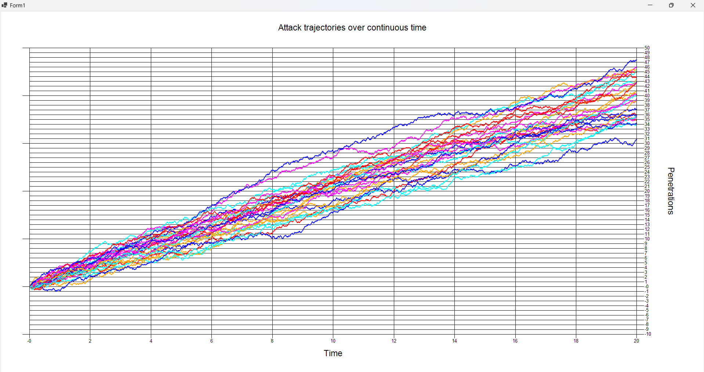

Statistical independence is a fundamental concept in probability theory, indicating that the occurrence of one event does not influence the occurrence of another. Here's an illustration of the concept along with formal definitions and analogies.
Two events \(A\) and \(B\) are said to be statistically independent if the probability of both events occurring together is equal to the product of their individual probabilities. Mathematically, this is defined as:
\[ P(A \cap B) = P(A) \cdot P(B) \]
Where:
1. Discrete Probability Example:
Consider a fair six-sided die.
Let \( A \) be the event "rolling an even number" (i.e., \( A = \\{2, 4, 6\\} \)).
Let \( B \) be the event "rolling a number greater than 3" (i.e., \( B = \\{4, 5, 6\\} \)).
The probabilities are:
\[
P(A) = \frac{3}{6} = \frac{1}{2}, \quad P(B) = \frac{3}{6} = \frac{1}{2}
\]
The intersection \( A \cap B = \\{4, 6\\} \), so:
\[
P(A \cap B) = \frac{2}{6} = \frac{1}{3}
\]
Here, since \( P(A \cap B) \neq P(A) \cdot P(B) \), the events \( A \) and \( B \) are dependent.
2. Independent Events Example:
Now consider flipping a coin and rolling a die.
Let \( C \) be the event "the coin shows heads" and \( D \) be the event "rolling a 4".
The probabilities are:
\[
P(C) = \frac{1}{2}, \quad P(D) = \frac{1}{6}
\]
Since the events are independent:
\[
P(C \cap D) = P(C) \cdot P(D) = \frac{1}{2} \cdot \frac{1}{6} = \frac{1}{12}
\]
Refine your stochastic SDE simulator to generate a continuous time, process to represent the scaling limit of the random Walk. To create the approximation of time continuity subdivide your reference temporal window into vanishing intervals dt and on each infinitesimal interval assign a probability p or p to make a jump of a + or - sqrt(dt). Note the significance of the simulation (Donsker invariance principle/ theorem or the functional central limit theorem) in relation to the Wiener process.
Most of the code is the same as the previous homework. Below there are the only few relevant changes in this homework.
The code below shows the new version of the function that simulates the penetrations of each attacker.
The screenshot below shows the output of the realized program, using the parameters m = 25 for the attackers, penetration probability p = 0.6, number of intervals = 2000, total time = 20, dt = 0.01.
The Donsker Invariance Principle is a result in probability theory that states that if we take a sum of independent, identically distributed random variables with zero mean and finite variance, the scaled cumulative sum of these variables converges in distribution to a Wiener process (or Brownian motion) as the number of terms goes to infinity. This theorem provides a bridge between discrete random walks and continuous Brownian motion.
The Wiener process is a fundamental building block in stochastic calculus and is used to model random continuous processes. The Donsker theorem essentially states that complex discrete systems can approximate the simpler, continuous Wiener process under proper scaling. Thus, the simulation demonstrates how these random paths conform to a continuous stochastic model, reinforcing the idea that discrete, finite-time processes can exhibit behaviors of a continuous process in the limit.
{kind=link}